공조냉동기계산업기사 (2011-06-12 기출문제)
1과목: 공기조화
1. 증기 압축식 냉동기 중 대규모 건축물의 공조용으로 사용되는 대용량 냉동기 형식으로 맞는 것은?
- 원심식
- 왕복동식
- 스크류식
- 흡수식
(정답률: 62%)

2. 다음 용어의 설명이 잘못된 것은?
- 다이아몬드 브레이크(diamond break) : 덕트 굴곡부 기류 안내
- 벨마우스(bell mouth) : 송풍기 흡입덕트 와류방지 입구
- 이즈먼트(easement) : 덕트 내 유동저항 완화 커버
- 스머징(smudging) : 취출구 주위 천청면이 더러워짐
(정답률: 82%)
3. 공기조화 부하의 종류 중 실내부하와 장치부하에 해당되지 않는 것은?
- 사무기기나 인체를 통해 실내에서 발생하는 열
- 외부의 고온 기류가 실내로 들어오는 열
- 덕트에서의 손실열 또는 취득열
- 펌프동력에서의 취득열
(정답률: 73%)
4. 인체에 작용하는 실내 온열환경 4대요소가 아닌 것은?
- 청정도
- 평균복사온도
- 기류속도
- 공기온도
(정답률: 82%)
5. 공기조화를 하고 있는 건축물의 출입구로부터 들어오는 틈새바람을 줄이기 위한 가장 효과적인 방법은?
- 출입구에 자동 개폐되는 문을 사용한다.
- 출입구에 회전문을 사용한다.
- 출입구에 플로어 힌지를 부착한 자재문을 사용한다.
- 출입구에 수동문을 사용한다.
(정답률: 87%)
6. 공기조화설비에 전열교환기와 같은 열 회수장치를 설치할 경우 감소시킬 수 있는 부하는?
- 실내부하
- 외기부하
- 조명부하
- 송풍기부하
(정답률: 73%)
7. 실내의 냉방부하 중에서 현열부하는 2326kcal/h, 잠열부하는 407kcal/h 일 때 현열비는 약 얼마인가?
- 0.15
- 0.74
- 0.85
- 6.71
(정답률: 73%)
8. 온도 30℃, 압력 4kg/cm2.abs인 공기의 비체적은 얼마인가?
- 0.4m3/kgf
- 4.0m3/kgf
- 2.2m3/kgf
- 0.22m3/kgf
(정답률: 38%)
9. 수열원 히트펌프의 열원으로 이용할 수 없는 것은?
- 지하수(地下水)
- 하수(河水)
- 공기(空氣)
- 해수(海水)
(정답률: 81%)
10. 보일러의 종류 중 수관식보일러의 분류에 해당되지 않는 것은?
- 관류보일러
- 연관보일러
- 자연순환식 보일러
- 강제순환식 보일러
(정답률: 72%)
11. 소규모 변전실, 보일러실, 창고 등의 환기방식으로 적합한 것은?
- 압입 흡출 병용 환기
- 압입식 환기
- 흡출식 환기
- 풍력 환기
(정답률: 67%)
12. 공기 중의 유해가스나 냄새 등을 제거하기 위해 널리 사용되는 공기정화 장치는?
- 활성탄 필터
- 세정 가능한 유닛형 에어필터
- 여과재 교환형 패널 에어필터
- 초고성능 에어필터
(정답률: 90%)
13. 용량 10kw의 전동기에 의해 작동되는 기계가 있다. 전동기는 실외, 기계는 실내에 있는 경우 장치로부터 취득되는 열량은 얼마인가? (단, 전동기의 부하율은 0.85, 전동기의 가동율은 0.7, 전동기의 효율은 0.8이다.)(오류 신고가 접수된 문제입니다. 반드시 정답과 해설을 확인하시기 바랍니다.)
- 1279 kcal/h
- 5117 kcal/h
- 6396 kcal/h
- 8600 kcal/h
(정답률: 56%)
14. 수증기 분압 Pw(mmHg)와 절대습도 x (kg/kg)와의 관계식으로 맞는 것은? (단, P:습공기의 전압(mmHg) 이다.)
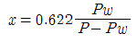
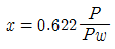
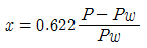
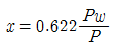
(정답률: 64%)
15. 난방방식 분류가 잘못된 것은?
- 복사난방-온돌난방
- 직접난방-증기난방
- 간접난방-온수난방
- 지열난방-고온수난방
(정답률: 62%)
16. 난방설계조건에서 실내온도 결정시 고려해야 할 사항이 아닌 것은?
- 건물의 구조
- 건물의 용도
- 재실자의 연령, 체질, 활동상태 등의 특성
- 관련 법정기준(에너지 절약 설계기준 등)
(정답률: 65%)
17. 공기세정기(air washer)에는 "입구공기 의 흐름을 균일하게 하는( ① )를, 출구 측에는 물방울이 공기에 혼입되지 않도록 ( ② )를 설치한다." 에서 각 번호의 기기 명칭으로 맞는 것은?
- ① 스탠드파이프, ② 플러딩 노즐
- ① 플러딩 노즐, ② 루버
- ① 루버, ② 엘리미네이터
- ① 엘리미네이터, ②스탠드파이프
(정답률: 76%)
18. 다음 방열기 기호에서 중간단에 표시된 내용(5-950)으로 맞는 것은?
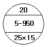
- 유입관의 크기
- 유출관의 크기
- 절(section) 수
- 방열기의 종류와 높이
(정답률: 88%)
19. 온수난방에 대한 설명으로 옳지 않은 것은?
- 증기난방에 비해 비교적 높은 쾌감도를 얻을 수있다.
- 온수난방의 주 이용열은 잠열이다.
- 열용량이 커서 예열시간이 길다.
- 온수의 온도에 따라 저온수식과 고온수식으로 분류한다.
(정답률: 87%)
20. 냉각탑이나, 환기용 등 풍량이 많고 압력이 낮은 경우에 사용되는 것은?
- 다익 송풍기
- 터보 송풍기
- 축류 송풍기
- 관류 송풍기
(정답률: 62%)
2과목: 냉동공학
21. 스팀 이젝터(steam ejector)와 관계있는 냉동기는?
- 증기압축 냉동기
- 회전 냉동기
- 증기분사 냉동기
- 흡수 냉동기
(정답률: 82%)
22. 냉동장치에서 안전밸브의 설치 위치로 적당하지 않은 곳은?
- 압축기 토출관
- 수액기
- 증발기 출구
- 응축기 출구
(정답률: 52%)
23. 냉동장치에서 액관의 어떤 부분에 플래쉬가스가 나타났을 때 그 원인에 해당되는 것은?
- 액관이 냉매액 온도보다 낮은 냉장실 같은 곳을 통과하기 때문이다.
- 액가스 열교환기를 설치하여 냉매액을 과냉각 시켰기 때문이다.
- 냉매의 저항을 적게하기 위하여 액관을 과도하게 굵게 했기 때문이다.
- 액관 중에 솔레노이드 밸브 또는 스트레이너가 오물로 막히거나 액관이 용량에 비하여 구경이 적기 때문이다.
(정답률: 76%)
24. 다음 그림은 R-22 냉동장치의 냉동 사이클을 P-h 선도에 나타낸 것이다. 다음 설명 중 옳지 않은 것은?
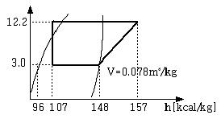
- 1냉동톤(3,320kcal/h)당 소요 냉매 순환량은 약 81kg/h이다.
- 압축기의 체적효율을 0.75라 하면 1냉동톤당 소요 피스톤 토출량은 약 8.42m3/h 이다.
- 성적계수는 약 5.56이다.
- 팽창밸브 출구에 있어서 냉매의 건조도는 약 0.2이다.
(정답률: 71%)
25. 이중 효용 흡수식 냉동기에 대한 설명 중 옳지 않은 것은?
- 일중 효용 흡수식 냉동기에 비해 효율이 높다.
- 2개의 재생기를 갖고 있다.
- 2개의 증발기를 갖고 있다.
- 2개의 열교환기를 갖고 있다.
(정답률: 68%)
26. 냉장수송장치에서 수송온도에 따라 분류한 것 중 올바르지 못한 것은?
- 냉동수송:-18℃
- 저온수송:-5~-8℃
- 냉장수송:0℃
- 상온수송:10~20℃
(정답률: 71%)
27. 온도 10℃의 공기(Cv=0.17kcal/kg.℃) 3kg을 내압용기에 넣고 일정 체적하에서 가열하였더니 엔트로피가 0.25kcal/kg·K증가하였다. 이 때 내부에너지의 증가량은 얼마인가?
- 80.5kcal
- 91.4kcal
- 98.6kcal
- 100.2kcal
(정답률: 49%)
28. 소형 냉동기(프레온계)에 사용되면서 냉각수용 배관 및 배수설비가 필요하지 않는 응축기는?
- 횡형 원통다관식 응축기
- 대기식 응축기
- 증발식 응축기
- 공랭식 응축기
(정답률: 67%)
29. 암모니아(NH3)를 냉매로 사용하는 흡수 식 냉동기의 흡수제는 어느 것인가?
- 질소
- 프레온
- 염화나트륨
- 물
(정답률: 84%)
30. 주로 대용량의 공조용 냉동기에 사용되는 터보식 냉동기의 냉동부하 변화에 따른 용량 제어 방식이 아닌 것은?
- 압축기 회전수 가감법
- 흡입 가이드 베인 조절법
- 크리어런스 증대법
- 흡입 댐퍼 조절법
(정답률: 63%)
31. 항공기 재료의 내한성능을 시험하기 위 한 냉동설비를 하려고 한다. 가장 적합한 냉동기는 다음 중 어느 것인가?
- 왕복동 압축식 냉동기
- 원심 압축식 냉동기
- 축류 압축식 냉동기
- 흡수식 냉동기
(정답률: 85%)
32. 전자밸브를 설치할 때 주의사항으로 틀 린 것은?
- 전압과 용량에 맞추어 설치되었는지 확인한다.
- 코일 부분이 하부로 오도록 수평하게 설치되었는지 확인한다.
- 본체의 유체 방향에 맞추어 설치되었는지 확인한 다.
- 밸브 입구에 여과기가 설치되었는지 확인한다.
(정답률: 81%)
33. 수축열 방식에서 축열재의 구비조건으로 잘못된 것은?
- 단위체적당 축열량이 많을 것.
- 취급이 용이하고 가격이 낯을 것.
- 화학적으로 안정되고 열 출입이 용이할 것.
- 축열조에서 열손실 및 반송동력(펌프)이 클 것.
(정답률: 83%)
34. 열과 일사이의 에너지 보존의 원리를 표현한 것은?
- 열역학 제1법칙
- 열역학 제2법칙
- 보일샤를의 법칙
- 열역학 제0의 법칙
(정답률: 68%)
35. 저온의 냉장실에서 운전 중 냉각기에 적상(성애)이 생길 경우 이것을 살수로 제상(def rost) 하고자 할 때 주의할 사항으로 옳지 않은 것은?
- 냉각용 송풍기는 정지 후 살수 제상을 행한다.
- 제상수의 온도는 30~40℃ 정도의 물을 사용한다.
- 살수하기 전에 냉각(증발)기로 유입되는 냉매액 을 차단 한다.
- 분사 노즐은 항상 깨끗이 청소한다.
(정답률: 77%)
36. 어떤 냉동장치의 냉동능력이 3RT이고 이때의 압축기 소요동력이 3.7kw이었다면 응축기에서 제거하여야 할 열량은 약 몇 kcal/h인가?
- 25500 kcal/h
- 9860 kcal/h
- 18250 kcal/h
- 13140 kcal/h
(정답률: 57%)
37. 다음과 같이 냉동사이클을 행하는 냉동 장치에서 냉매순환량이 450kg/h, 전동기 출력 3.0kw일 경우 실제 성적계수는 얼마인가?
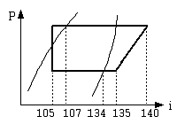
- 5.24
- 4.83
- 4.14
- 3.75
(정답률: 37%)
38. 냉동장치의 증발압력이 너무 낮은 원인으로 적당하지 않은 것은?
- 수액기 및 응축기내에 냉매가 충만해 있다.
- 팽창밸브가 너무 조여 있다.
- 여과기가 막혀 있다.
- 증발기의 풍량이 부족하다.
(정답률: 82%)
39. 15000kg·m의 일은 몇 kcal의 열량이 될 수 있는가?
- 27.45kcal
- 32.62kcal
- 35.13kcal
- 41.57kcal
(정답률: 61%)
40. 냉동기유에 대한 냉매의 용해성이 가장 큰 것은?
- R-113
- R-22
- R-115
- R-717
(정답률: 61%)
3과목: 배관일반
41. 급수배관설비에서 옥상탱크의 양수관 관경이 25A일 때 오버플로우(over flow)관의 관경으로 적합한 것은?
- 25A
- 40A
- 50A
- 65A
(정답률: 79%)
42. 2단압축기의 중간냉각기 종류에 속하지 않는 것은?
- 액냉각형 중간 냉각기
- 흡수형 중간 냉각기
- 플래시형 중간 냉각기
- 직접 팽창형 중간 냉각기
(정답률: 56%)
43. 냉매용 밸브 중에서 냉동부하와 증발온도에 따라 증발기에 들어가는 냉매량을 조절하는 밸브로 맞는 것은?
- 팩드 밸브
- 팩리스 밸브
- 전자 밸브
- 팽창 밸브
(정답률: 52%)
44. 공기조화 설비에서 증기코일에 관한 설명으로 틀린 것은?
- 코일의 통과풍속은 3~5m/s로 한다.
- 온수코일에 비하여 열수를 작게 할 수 있다.
- 응축수 배출을 위해 약 1/50~1/100 정도의 순구배로 한다.
- 일반적인 증기의 압력은 2~3kgf/cm2 정도로 한다.
(정답률: 47%)
45. 증기난방에 비해 온수난방의 특징을 설명한 것으로 잘못된 것은?
- 예열 하는데 많은 시간이 걸린다.
- 부하 변동에 대응한 온도 조절이 어렵다.
- 방열면의 온도가 비교적 높지 않아 쾌감도가 좋다.
- 설비비가 다소 고가이나 취급이 쉽고 비교적 안전하다.
(정답률: 80%)
46. 중앙관리방식의 공기조화설비에서 건물 의 환경 위생유지에 필요한 실내 환경기준 중 온도, 상대습도, 기류를 옳게 나열한 것은?
- 실내온도 17~28℃, 상대습도 40~70%, 기류 0.5 m/s 이하
- 실내온도 20~30℃, 상대습도 50~70%, 기류 0.8 m/s 이하
- 실내온도 22~35℃, 상대습도 60~80%, 기류 1.0 m/s 이하
- 실내온도 24~40℃, 상대습도 70~90%, 기류 1.2 m/s 이하
(정답률: 68%)
47. 부식은 주위환경과의 사이에 발생되는 전기화학적 반응으로 강관을 부식하게 된다. 이를 방지하는 전기방식법의 종류가 아닌 것은?
- 희생양극법
- 선택배류법
- 강제배류법
- 내부전원법
(정답률: 62%)
48. 배수용 트랩에 대한 설명으로 틀린 것은?
- U트랩은 수평주관에 설치하여 건물 배수주관에서 유해가스의 침입을 방지한다.
- S트랩은 세면기, 소변기 등에 설치하며 수평배관에 연결할 때 사용된다.
- P트랩은 세면기, 소변기 등에 설치하며 수직배수관에 연결할 때 사용된다.
- 배수트랩을 작용하는 면에서 구별하면 사이펀식과 비사이펀식이 있다.
(정답률: 59%)
49. 급탕설비에서 팽창관의 역할과 거리가 먼 것은?
- 온도에 따른 관의 길이팽창을 흡수한다.
- 보일러, 저탕조 등 밀폐가열장치내의 상승압력을 도피시킨다.
- 물의 체적팽창을 흡수한다.
- 안전밸브의 역할을 한다.
(정답률: 50%)
50. 배수관 설치기준에 대한 내용 중 틀린 것은?
- 배수관의 최소 관경은 20mm이상으로 한다.
- 지중에 매설하는 배수관의 관경은 50mm이상이 좋다.
- 배수관은 배수의 유하방향(流下方向)으로 관경을 축소해서는 안 된다.
- 기구배수관의 관경은 이것에 접속하는 위생기구의 트랩구경 이상으로 한다.
(정답률: 71%)
51. 가스관으로 많이 사용하는 일반적인 관의 종류는?
- 주철관
- 주석관
- 연관
- 강관
(정답률: 78%)
52. 중수도에서 처리한 물의 용도로 적당하지 않은 것은?
- 청소용수
- 소방용수
- 조경용수
- 음용수
(정답률: 86%)
53. 배관계의 도중에 설치하여 유체속에 혼입된 토사나 이물질 등을 제거하는 배관 부품은?
- 팽창이음(Joint)
- 밸브(Valve)
- 스트레이너(Strainer)
- 저수조(貯水槽)
(정답률: 87%)
54. 급수 배관에서 플러시밸브나 급속 개폐식 수전을 사용할 때 발생될 수 있는 현상과 거리가 먼 것은?
- 수격작용이 발생
- 소음이 발생
- 진동이 발생
- 수온의 저하가 발생
(정답률: 76%)
55. 유체의 흐름을 단속하는 대표적인 밸브로서 슬루스밸브 또는 사절변 이라고도 하는 밸브는?
- 게이트밸브
- 글로브밸브
- 체크밸브
- 플랩밸브
(정답률: 66%)
56. 강판제 케이싱 속에 열전도성이 우수한 핀(fin)을 붙여 대류작용 만으로 열을 이동시켜 난방하는 방열기로 대류 방열기라고도 하는 것은?
- 콘백터
- 길드 방열기
- 주형 방열기
- 벽걸이 방열기
(정답률: 80%)
57. 도시가스배관을 지하에 매설하는 중압 이상인 배관과 지상에 설치하는 배관의 표면 색상으로 맞는 것은?
- 적색, 회색
- 백색, 적색
- 적색, 황색
- 백색, 황색
(정답률: 83%)
58. 도시가스 배관에서 중압이라 함은 얼마를 뜻하는가?
- 0.1MPa~1MPa 미만
- 1MPa~3MPa 미만
- 3MPa~10MPa 미만
- 10MPa~100MPa 미만
(정답률: 76%)
59. 주거용 건물에서 물의 사용량이 가장 많은 시각을 피크타임(peak time)이라고 하고, 그 시각의 사용수량을 피크로드(peak load)라 부르는데 피크로드는 1일 사용수량의 약 얼마인가?
- 3~8% 정도
- 10~15% 정도
- 20~25% 정도
- 30~35% 정도
(정답률: 67%)
60. 급탕배관 내의 압력이 0.7kg/cm2이면 수두로 몇 m와 같은가?
- 0.7m
- 1.7m
- 7m
- 70m
(정답률: 79%)
4과목: 전기제어공학
61. 다음 중 제어기기에서 서보전동기는 어디에 속하는가?
- 검출기기
- 변환기기
- 증폭기기
- 조작기기
(정답률: 84%)
62. 그림과 같은 논리회로에서 출력 Y는?
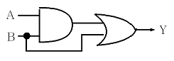
- Y = AB + A
- Y = AB + B
- Y = AB
- Y = A + B
(정답률: 74%)
63. 1C의 전기량에 포함되어 있는 전자의 수는 몇 개인가?
- 1.602×10-18
- 1.602×1018
- 6.24×1018
- 6.24×10-18
(정답률: 61%)
64. 다음 중 인덕터의 특징을 요약한 것으로 옳지 않은 것은?
- 인덕터는 직류에 대하여 단락 회로로 작용한다.
- 일정한 전류가 흐를 때 전압은 무한대이지만 일정량의 에너지가 축적된다.
- 인적터의 전류가 불연속적으로 급격히 변화하면 전압이 무한대가 되어야 하므로 인덕터 전류가 불연속적으로 변할 수 없다.
- 인덕터는 에너지를 축적하지만 소모하지는 않는다.
(정답률: 50%)
65. 출력 3kw, 1500rpm인 전동기의 토크는 몇 kg·m 인가?
- 0.49
- 1.95
- 20.5
- 37.5
(정답률: 52%)
66. 전지에는 1차 및 2차 전지가 있다. 1차 전지에 속하는 것은?
- 납축전지
- 니켈-카드뮴전지
- 수은전지
- 리튬-이온전지
(정답률: 66%)
67. 제어계의 응답 속응성을 개선하기 위한 제어동작은?
- D동작
- I동작
- PD동작
- PI동작
(정답률: 65%)
68. 특성방정식 S2+sδWnS+Wn2=0에서 를 제동비라 할 때 δ<1인 경우는?
- 임계제동
- 무제동
- 과제동
- 부족제동
(정답률: 57%)
69. 변압기는 어떤 원리를 이용한 것인가?
- 정전유도작용
- 전자유도작용
- 전류의 발열작용
- 전극의 화학작용
(정답률: 75%)
70. 블록선도의 등가변환이 잘못된 것은?
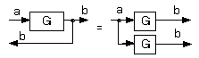
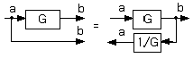
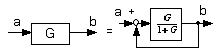
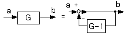
(정답률: 53%)
71. 폐루프 제어계의 장점이 아닌 것은?
- 생산품질이 좋아지고 균일한 제품을 얻을 수 있다.
- 수동제어에 비해 인건비를 줄일 수 있다.
- 제어장치의 운전, 수리에 편리하다.
- 생산속도를 높일 수 있다.
(정답률: 60%)
72. PI 동작의 전달함수는?
- K
- KsT
- K(1+sT)
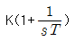
(정답률: 52%)
73. 인버터를 이용하여 전동기를 제어하는 경우 다음 중 어떤 것을 선택하는가?
- UPS
- VVVF
- CVCF
- PWM
(정답률: 75%)
74. 논리식
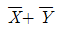
와 같은 식은?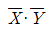
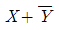
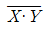
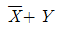
(정답률: 73%)
75. 단상 정류회로에서 3상 정류회로로 변환했을 경우 옳은 것은?
- 맥동률은 감소하고 직류 평균전압은 증가한다.
- 맥동률은 증가하고 직류 평균전압은 감소한다.
- 맥동률과 맥동주파수가 증가한다.
- 맥동률은 증가하고 맥동주파수는 감소한다.
(정답률: 50%)
76. PI제어동작은 프로세스제어계의 정상특성을 개선하는데 흔히 사용되는데 이것에 대응하는 보상요소는?
- 안정도 보상요소
- 이득 보상요소
- 지상 보상요소
- 진상 보상요소
(정답률: 82%)
77. 5Ω의 저항 5개를 직렬로 연결하면 병렬로 연결했을 때의 몇 배가 되는가?
- 10
- 25
- 50
- 75
(정답률: 85%)
78. 자동제어 장치의 종류에서 연속식 압연기의 자동제어는?
- 추종제어
- 프로그래밍제어
- 비례제어
- 정치제어
(정답률: 44%)
79. 커피포트를 이용하여 물을 끓였을 때 얻은 열량은 7200cal 였다. 이 커피포트에는 200V, 1A의 전기를 5분 동안 입력하였다면 역률은 얼마인가?
- 0.1
- 0.25
- 0.5
- 0.7
(정답률: 40%)
80. 피드백 제어계에서 반드시 있어야 할 장치는?
- 전동기 시한 제어장치
- 응답속도를 느리게 하는 장치
- 발진기로서의 동작 장치
- 입력과 출력을 비교하는 비교장치
(정답률: 87%)